和歌山県
Wakayama Prefecture
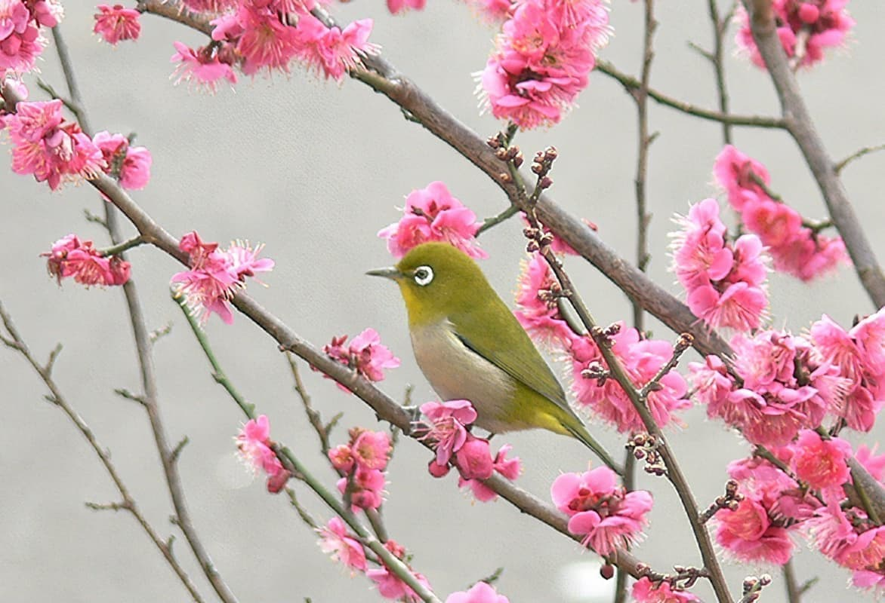
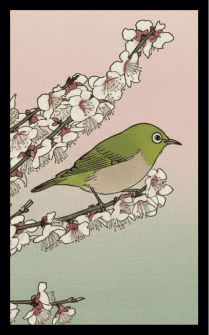
南部の梅に鶯
風景：「一目百万、香り十里」と称される南部（みなべ）梅林の広大な風景とウグイス。
解説：日本一の梅の里、みなべ・田辺の梅振興を象徴する一枚。伝統的な「梅に鶯」を、山一面が白く染まる和歌山の実景として描き出します。
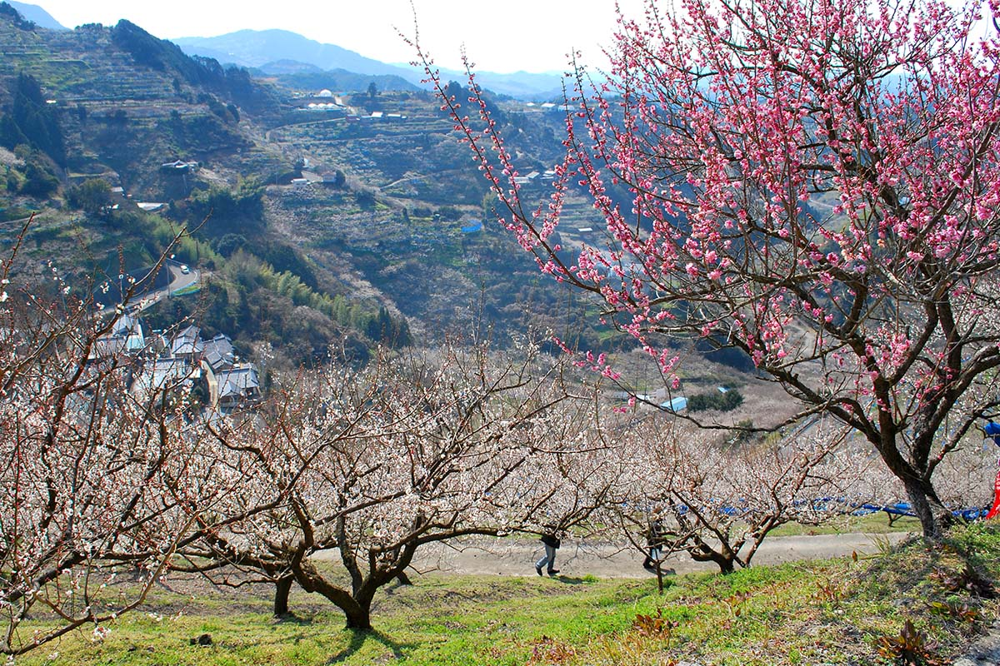
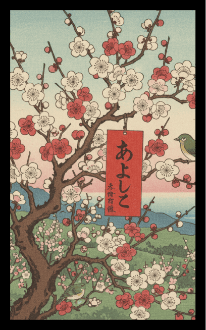
紀州の梅に赤短
風景：紀州の豊かな陽光を浴びてほころぶ紅白の梅。
解説：万葉の時代から愛される紀州の梅に、新春を祝う赤短を添えます。和歌山らしい温暖で穏やかな春の訪れを表現します。
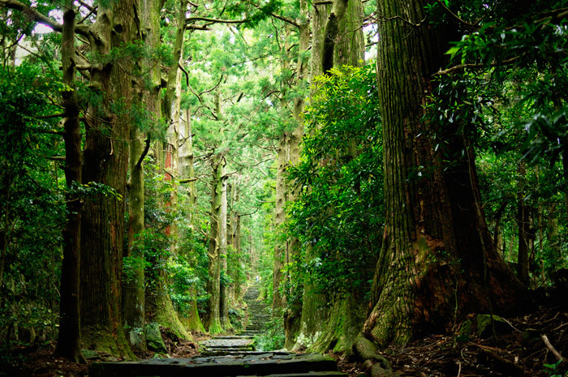
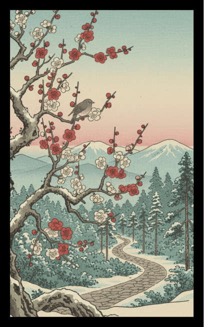
熊野古道の早咲き梅
風景： 熊野古道の入り口や沿道にひっそりと咲く野生味のある梅。
解説： 聖地へと続く祈りの道に彩りを添える梅の風景。古道の石畳と、早春の厳しい寒さの中で咲く花の対比を描きます。
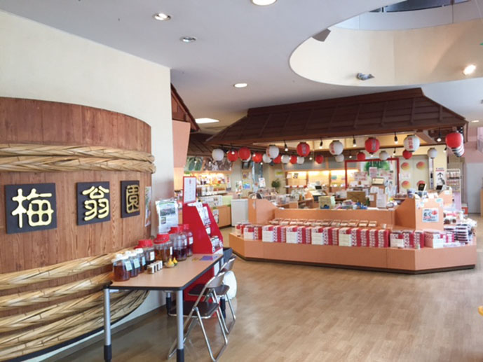
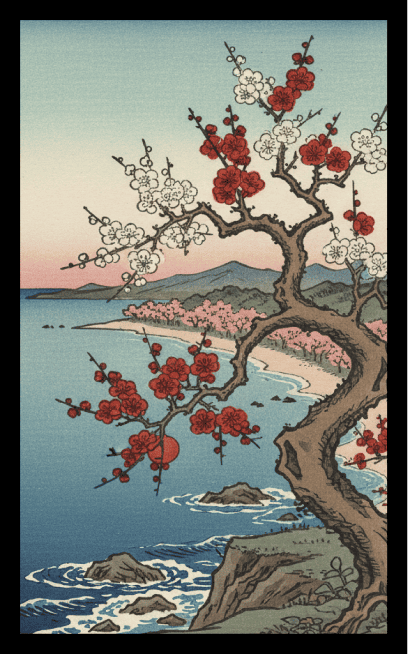
紀州梅干しの樽
風景：昔ながらの木樽に詰められた、大粒の紀州南高梅の梅干し。
解説：和歌山のアイデンティティである「梅干し」をあえてカス札に採用。生活に根ざした食文化と、地場産業への敬意を込めたユニークな一枚です。
2月
絵札を押すと
詳細が見れるぞ
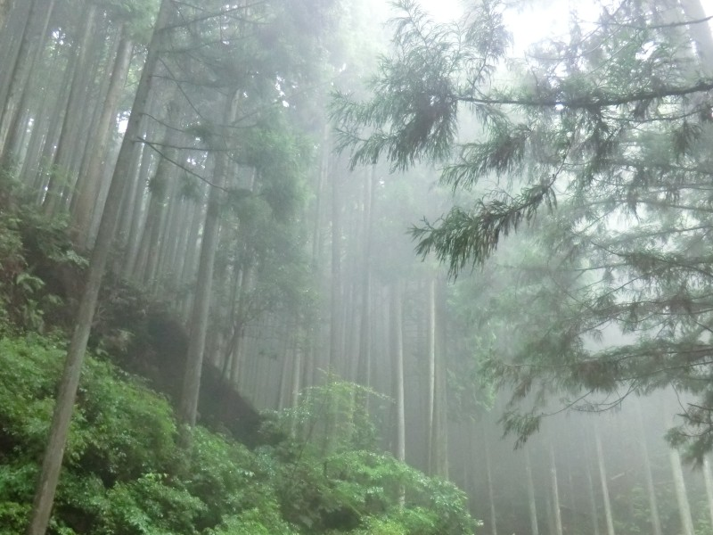
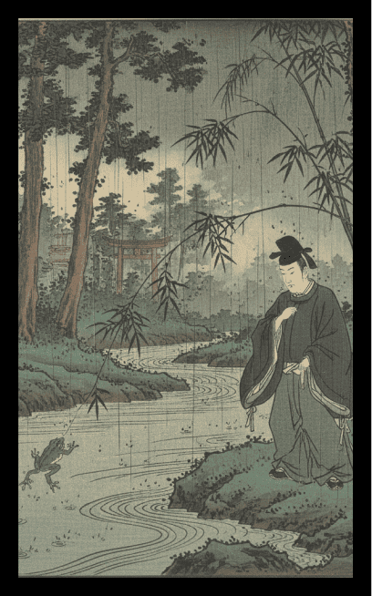
熊野の柳に小野道風
風景：熊野古道の杉並木が続く雨の道中、柳の木の下で修行に励む（あるいは悟りを開く）小野道風。
解説：伝統的な「柳に小野道風」を、修行の地・熊野の文脈で再解釈。降りしきる雨の中、カエルを見て努力の大切さを知る道風の姿を、聖地の神秘性と重ね合わせます。
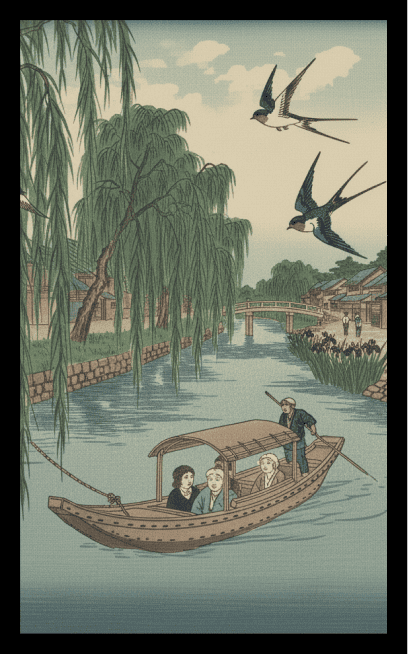
和歌浦の柳にツバメ
風景：万葉の景勝地・和歌浦の海岸沿いに揺れる柳と、そこを飛ぶツバメ。
解説：柳川（和歌浦周辺）の情緒ある水辺の風景。古来より歌聖たちが愛した美しい干潟の景色を、伝統的な種札の構図に落とし込みます。
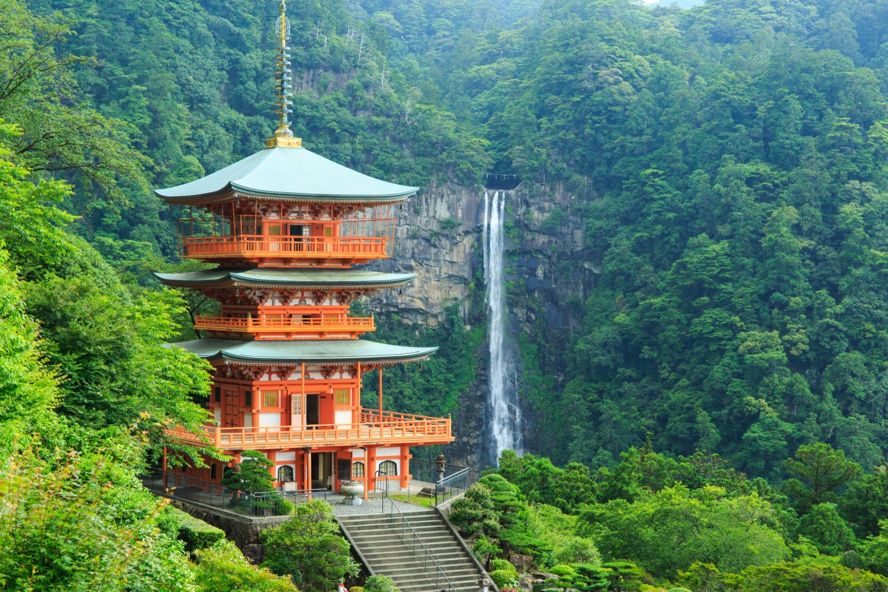
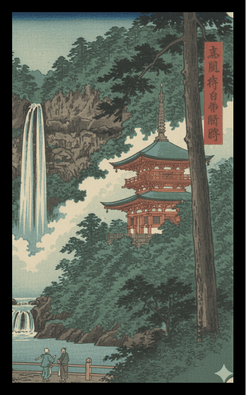
那智の滝に短冊
風景：日本一の名瀑、那智の滝から立ち上る水飛沫と、傍らに揺れる柳の枝。
解説：熊野那智大社の御神体である大滝に、祈りを込めた短冊を配置。11月の札が持つ「雨・水」のイメージを、日本屈指のパワースポットで表現します。
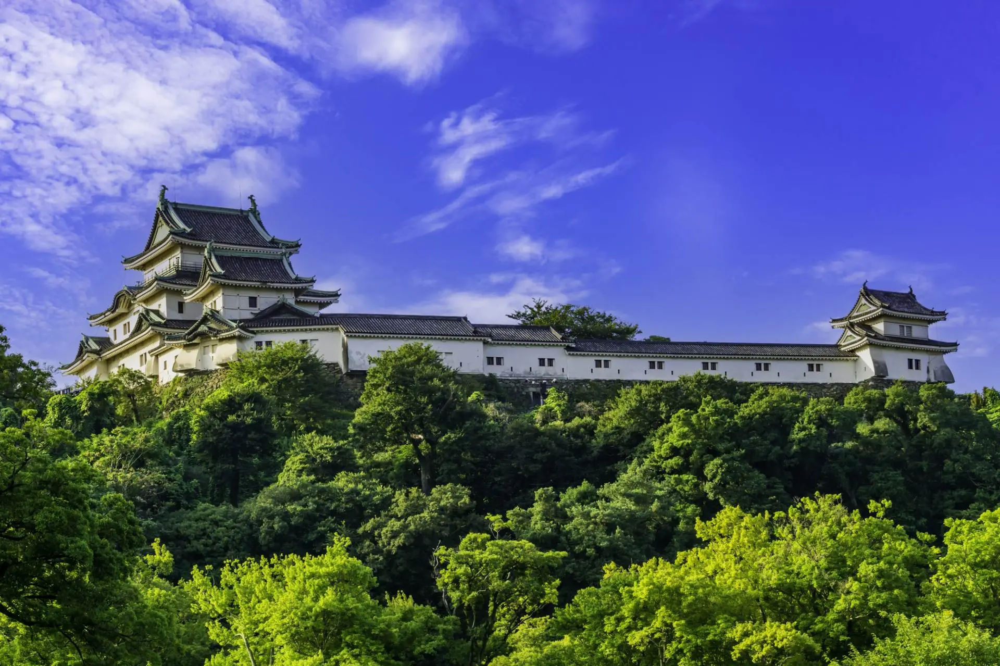
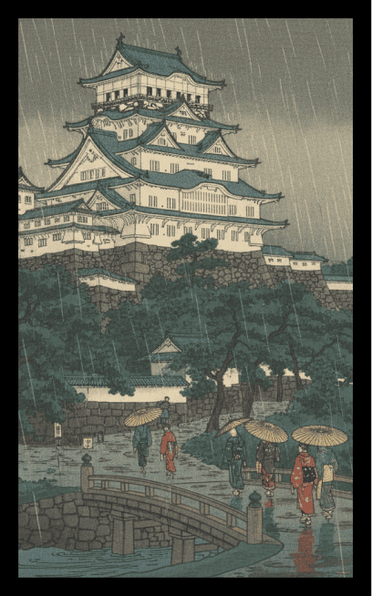
雨の和歌山城
風景：しとしとと降る雨に煙る和歌山城（虎伏城）の白亜の天守。
解説：11月の札のテーマである「雨」の中に、徳川御三家・紀州徳川家の拠点である和歌山城を配置。しっとりとした情緒の中に威厳を感じさせる風景です。
11月
絵札を押すと
詳細が見れるぞ